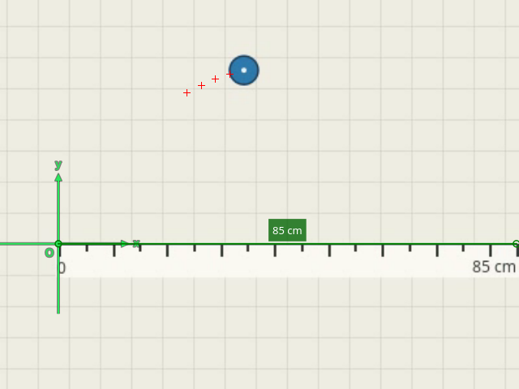

Filmer un mouvement
Bien filmer avec un téléphone, transférer la vidéo, les ralentis
Préparer le cadrage
- Immobilisez la caméra. Cadrez l’ensemble du mouvement avec l’axe optique perpendiculaire à son plan.
- Placez dans ce même plan une règle ou deux repères dont vous connaissez la distance. Leurs extrémités doivent être visibles ensemble sur au moins une image.
- Choisissez un détail contrasté sur le mobile. Éclairez la scène et regardez quelques images d’essai pour vérifier que ce détail reste net et que sa position change assez entre deux images.
- Pour un mouvement rapide, augmentez la cadence de prise de vue si la lumière le permet. Notez la cadence choisie pour pouvoir contrôler les dates au moment de l’analyse.


Transférer le fichier d’origine
Copiez le fichier d’origine par câble ou via l’espace de fichiers de l’établissement. Avant de distribuer le film, ouvrez-le sur un poste élève, avancez jusqu’à la dernière image utile et notez une distance connue dans le plan du mouvement.
Si vous recadrez ou réencodez le film, donnez un autre nom à la copie. Préparez tout projet destiné aux élèves avec la version exacte qu’ils recevront. Une messagerie peut supprimer les informations de ralenti lors de la recompression.
Les vidéos de téléphone
- En portrait
- MeVCine redresse tout seul une vidéo filmée en portrait. Si elle apparaît quand même couchée, tournez-la : étape 1 du mode simplifié, ou boutons ⟲ ⟳ sous l'image en mode expert (avant l'échelle et le pointage).
- Au ralenti
- Un film enregistré à 240 images/s peut se lire à 30 images/s. Pour dater le mouvement, utilisez la cadence de prise de vue. MeVCine l’utilise quand le fichier la fournit. Sinon, entrez la cadence connue dans Vidéo au ralenti ? à l’étape 4 ou Images par seconde en mode expert. Vérifiez ensuite l’intervalle de temps entre deux lignes consécutives.
- Cadence variable
- Beaucoup de téléphones ne filment pas à une cadence parfaitement régulière : par exemple 40 ms, puis 44 ms entre deux images ; ou ils perdent des images, ou filment moins vite quand la lumière baisse. MeVCine le détecte (« Cadence variable ») et utilise la date réelle de chaque image : les intervalles du tableau ne sont alors pas tous égaux, et c'est normal. Les vitesses et accélérations du grapheur en tiennent compte ; faites de même dans vos calculs, avec les dates du tableau.
- HDR
- Les vidéos HDR (iPhone récents) sont converties en couleurs ordinaires : elles ne paraissent pas délavées.
Pour une prise de vue à 240 images/s relue à 30 images/s, deux images consécutives du mouvement sont séparées d’environ 4,17 ms. Un intervalle de 33,3 ms dans le tableau indique que la cadence de lecture a été conservée. Vérifiez la cadence de prise de vue dans le fichier ou dans vos notes de tournage.
Les formats
MeVCine lit les formats des téléphones, des appareils photo et des webcams : MP4, MOV, AVI, MKV, WebM, 3GP, MTS…, en H.264, HEVC (H.265), AV1, VP9, ProRes, Motion JPEG. Les très grandes vidéos (4K) s'ouvrent, mais plus lentement : pour un TP, une vidéo en 1080p suffit largement. Une vidéo que MeVCine n'arrive pas à examiner en deux minutes (fichier abîmé, clé USB trop lente) est déclarée illisible : copiez-la d'abord sur l'ordinateur.